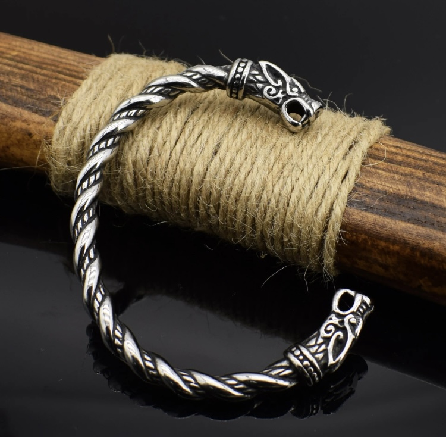
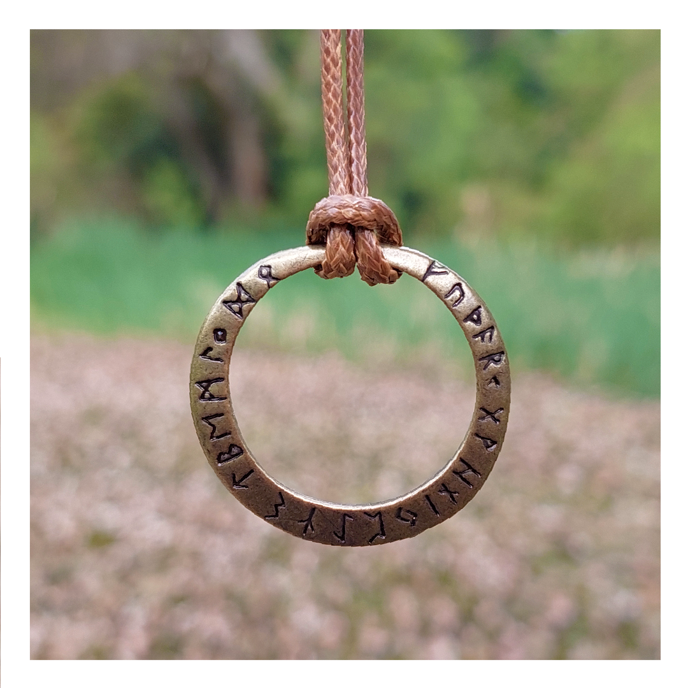
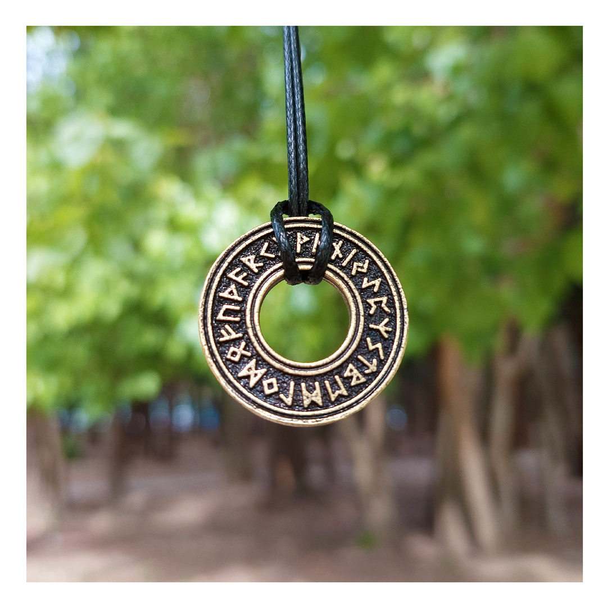

|
 | Tenemos 3 tipos de brazaletes. El brazalete aparece en la historia vikinga como una marca de estatus social y lo usaban como símbolo de sus éxitos en la batalla y en las expediciones del otro lado del mar. Se dice que los nórdicos fueron los primeros hombres en embarcarse en el mar hasta llegar al otro lado. |
|---|---|---|
Tenemos 4 modelos distintos de collares. Todos están inscritos con runas vikingas, del lenguaje futhark antiguo. Las runas estaban muy relacionadas con la conexión con los espíritus y los dioses. Y se grababan en objetos para darle protección al que los cargara. Este lenguaje surgió entre el año 150-800 y fue evolucionando hasta ser parte del alfabeto del inglés antiguo. Por lo tanto sigue siendo parte del inglés de hoy en día. |
 |  |